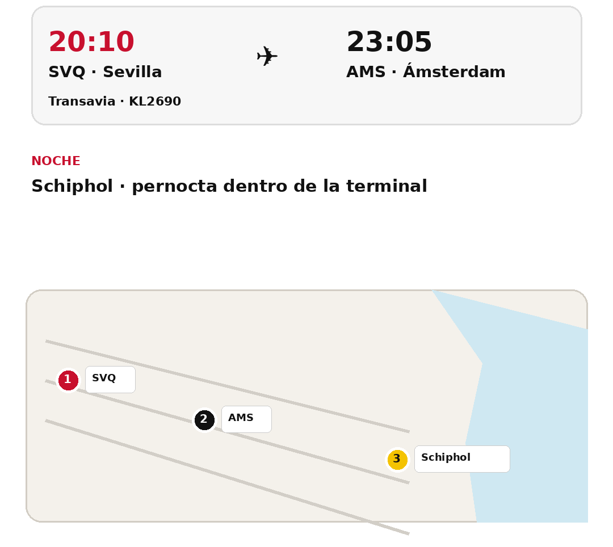
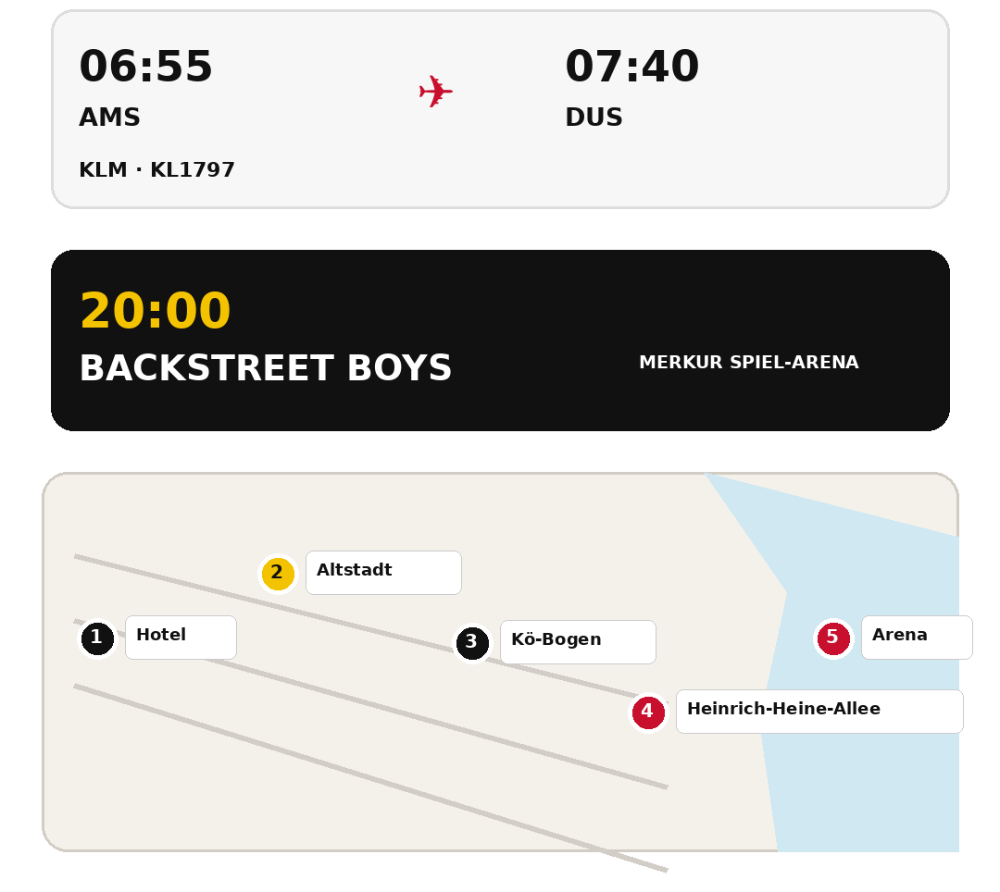
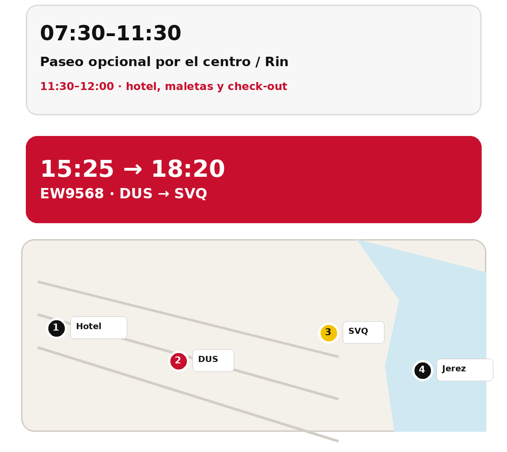

Fotos del grupo. Todos podéis entrar en la misma carpeta, ver las fotos y añadir las vuestras. No hay carpetas personales separadas.
📸 Carpeta compartida del viaje
Usad este único espacio para subir y consultar las fotos de Düsseldorf, el concierto y el viaje.
📸 Abrir Google Drive
Viernes 2
Sevilla → Ámsterdam → Schiphol

Sábado 3
Düsseldorf + concierto

Domingo 4
Última mañana + regreso a Sevilla
💡 Para subir una foto
Pulsa “Abrir Google Drive” y usa la opción de añadir/subir archivos desde el móvil. La carpeta es la misma para todos.